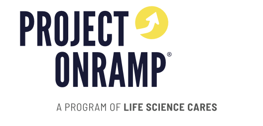

Life Science Cares runs Project Onramp, a program launched in 2019 to address a real inequity: internships at top life science companies were largely going to students from elite institutions or internal referrals. By 2025 the program had grown to five cities (Boston, Philadelphia, San Diego, Bay Area, New York), but each city was managed independently. The data showed it. Columns changed year to year. Demographic labels were inconsistent. Company and university names had no standardization. The program had real impact stories to tell, but no way to tell them with numbers. LSC needed a KPI framework that worked for two very different audiences (the board internally and partner companies externally), a clean longitudinal dataset, and dashboards that actually got used.
The work started with conversations, not code. I spent the first stretch in stakeholder meetings with the LSC team, mapping out what each audience actually needed to see. Funders and the board wanted to understand organizational health, scale, and demographic reach. Partner companies wanted to understand the quality and credibility of the talent pipeline. Same data, two completely different stories.
From there, I led the design of the KPI framework. We defined a North Star metric (number of under-resourced students placed in paid life science internships leading to meaningful career opportunities) and built out supporting input, process, output, and outcome metrics underneath it. I also designed an end-to-end Excel data collection framework covering everything from student demographics and placement data to mid-summer performance tracking and 6-12 month career outcomes, so future years would be measured consistently from day one.
Alongside the framework, the team cleaned and standardized six years of fragmented data across all five cities. We agreed on a core set of columns and standardized values for company names, university names, majors, and demographics so the dataset could finally be analyzed longitudinally. To accelerate the cleanup, I leaned on AI tools like Claude to handle repetitive standardization work across the messy multi-year dataset, so the team could spend more time on the harder questions. To pressure-test our approach, I ran external research benchmarking Project Onramp against peer programs in the space.
Power BI was chosen for the build because of its simplicity and versatility for the team. I built two dashboards on top of the cleaned dataset, one tuned for the board and one for partner companies, and automated the pipeline so updates in the source sheets flowed directly into the dashboards. Every iteration went back through stakeholder review (color schemes, terminology, layout, new metrics like volunteer engagement and professional development events) until both versions were ready to ship. To close the loop, we recorded a walkthrough video so anyone on the team could maintain the system after the internship ended.